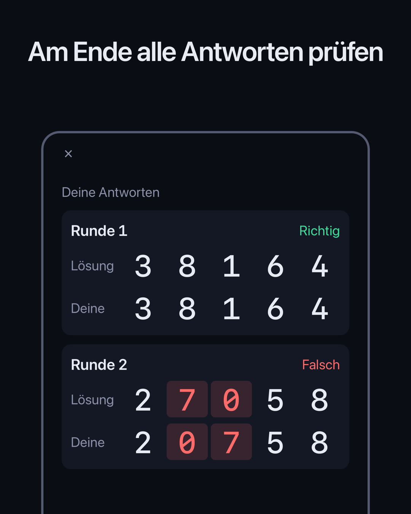
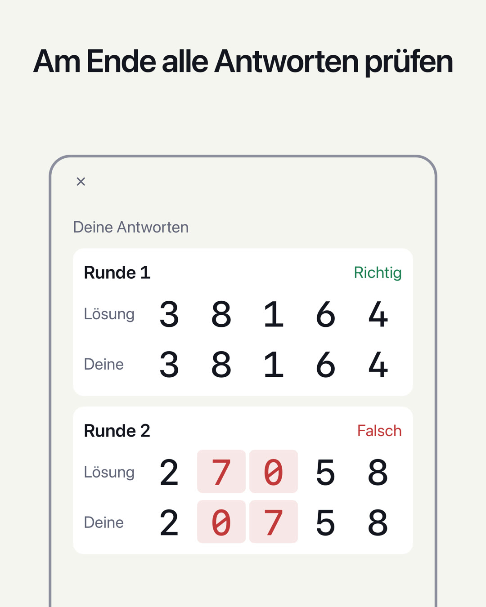

ZAHLENGEDÄCHTNISTEST / DIGIT SPAN
Wie viele Ziffern kannst du dir merken?
Die Ziffern erscheinen nacheinander. Sobald sie verschwunden sind, gibst du sie in der Reihenfolge ein, in der du sie gesehen hast. Wähle eine Stufe und beantworte 5 Runden. Die höchste Stufe, bei der du alle 5 Runden richtig hast, zeigt, wie viele Ziffern du dir merken kannst – deine Zahlenspanne. Ein einfacher Test des Kurzzeitgedächtnisses.
Demnächst verfügbar (für iPhone, kostenlos nutzbar)

So funktioniert es
- Ziffern ansehenSie erscheinen nacheinander (standardmäßig 0,7 Sekunden pro Ziffer).
- In derselben Reihenfolge eingebenBei „Rückwärts“ gibst du sie in umgekehrter Reihenfolge ein – mit der zuletzt gezeigten Ziffer zuerst.
- Nach 5 Runden auswerten5 Runden mit derselben Ziffernzahl. Nach jeder Runde siehst du nur, ob sie richtig oder falsch war; am Ende werden alle 5 Antworten zusammen gezeigt. Die höchste Stufe, bei der du alle 5 Runden richtig hast, ist deine Zahlenspanne.
Ausführliche Anleitung und häufige Fragen →
Funktionen
- Zwei Tests, „Vorwärts“ und „Rückwärts“, jeweils mit eigener Bestleistung. Bei „Rückwärts“ ordnest du die Ziffern im Kopf um, deshalb ist auch das Arbeitsgedächtnis gefordert
- Auf dem Ergebnisbildschirm gehst du alle 5 Runden durch: Deine Antwort steht neben der Lösung, abweichende Ziffern sind farbig markiert
- Im Verlauf siehst du, wie sich deine Bestleistung pro Tag entwickelt
- Stufe (2–12 Ziffern) und Anzeigetempo (0,05–2,0 Sekunden) lassen sich ändern
- Für die Ausgabe der Ziffern wählst du „Bildschirm“, „Vorlesen“ oder „Beides“. Mit „Vorlesen“ merkst du dir die Ziffern nur über das Gehör
- Design (Automatisch, Hell, Dunkel) und Farbe (Violett, Blau, Orange, Pink) sind wählbar
- Alle Ziffern in Festbreitenschrift, auf einem schlichten Bildschirm wie bei einem Messgerät
- Deine Ergebnisse bleiben auf deinem Gerät. Keine Anmeldung nötig
Für Erwachsene wird vorwärts oft ein Richtwert von 7±2 Ziffern genannt (Miller, 1956). Diese App zählt eine Stufe jedoch nur, wenn du bei derselben Ziffernzahl alle 5 Runden richtig hast – sie wertet also anders als übliche Tests. Die App dient dazu, deinen aktuellen Stand zu prüfen; sie ist keine medizinische Diagnose und nicht dazu gedacht, das Gedächtnis zu verbessern.
Schwester-App
Zur Werbung
Unten auf der Startseite und auf den Bildschirmen „Ergebnis“ und „Verlauf“ wird Werbung angezeigt. Wenn du einen Test startest („Test starten“ auf der Startseite oder „Noch einmal“ im Ergebnis; jedes zweite Mal), erscheint eine Vollbildwerbung. Während du die Ziffern ansiehst, deine Antwort eingibst oder angezeigt wird, ob sie richtig war, wird keine Werbung angezeigt.
Mit einem Premium-Abo (monatlich, verlängert sich automatisch; der Preis wird in der App und im App Store angezeigt) wird keine Werbung angezeigt. Das Abo verlängert sich automatisch, sofern du es nicht spätestens 24 Stunden vor Ende des aktuellen Zeitraums kündigst. Bedingungen und Kündigung findest du in den Nutzungsbedingungen. Alle Test- und Verlaufsfunktionen kannst du auch ohne Abo nutzen.